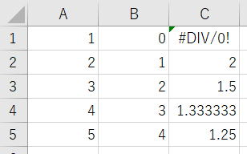
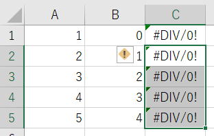
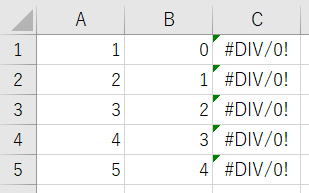
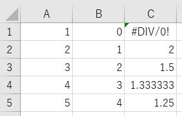

手動計算時の注意点と再計算方法
セルを変更する度に再計算が動いてしまうと処理時間が遅くなってしまいます。
そこでマクロVBAの中で、計算方法を手動にすることで対処することになります。
このとき処理結果が期待した結果にならないといった事が起こらないように、
手動計算時の注意点と再計算方法について解説します。
計算方法の切り替え：自動⇔手動
ApplicationのCalculationプロパティを設定します。
| xlCalculationAutomatic | 自動 |
| xlCalculationManual | 手動 |
| xlCalculationSemiautomatic | データテーブル以外の自動 |
Application.Calculation = xlCalculationManual
この記述をすることで、
これ以降、手動計算となり、自動では再計算は行われなくなります。
この設定は、マクロ終了後も引き続き有効となりますので、
必要に応じて、xlCalculationAutomaticに戻してください。
従って、ブックごとに計算方法を変更することはできません。
計算式を入れると必ず計算される
数式が参照している先のセル値が変更になっても再計算されません。
もちろん、計算方法を自動にした時点で再計算されますが、
マクロVBA実行中でxlCalculationManualになっている状態では、セル値は正しい値にはなっていません。
セルに計算式を入れた場合は、計算式を入れたセルについては必ず計算が行われます。
Sub sample1()
Application.Calculation = xlCalculationManual
Range("C1:C5").Value = "=A1/B1"
Call valuePrint
End Sub

Valueプロパティは、Formulaプロパティでも同じです。
Range("C2:C5").Formula = "=A2/B2"
VBA内で計算式を入れたセルについては、特に意識的に再計算を行わなくても問題はありません。
しかし、これから説明するような場合には、VBAで再計算を行わない限り再計算されません。
ブック保存時は再計算される
しかし、ブック保存時は再計算されます。
このブック保存時の再計算を止めるには、Application.CalculateBeforeSaveプロパティをFalseにします。
Application.CalculateBeforeSave = False
ただし、手動計算になっていなければ、次に開いたときに再計算されてしまうので意味がなくなります。
従って、通常はCalculationプロパティとともに使用します。
Application.Calculation = xlCalculationManual
Application.CalculateBeforeSave = False
セルのコピーでは再計算されない
以下のように、
C1セルに数式が入っているので、これと同じ数式をC2:C5に入れる場合です。
Sub sample2()
Application.Calculation = xlCalculationManual
Range("C1").Copy
Range("C2:C5").PasteSpecial Paste:=xlPasteFormulas
Application.CutCopyMode = False
End Sub

では、コピー方法を変えてみましょう。
Sub sample3()
Application.Calculation = xlCalculationManual
Range("C1").Copy Destination:=Range("C2:C5")
End Sub

Sub Macro4()
Application.Calculation = xlCalculationManual
Range("C1").AutoFill Destination:=Range("C1:C5")
End Sub
セルをコピーした以降のVBAにおいて、これらの（計算式を入れた）セルの値を使うとしたら・・・
これでは当然正しい結果にならないことになります。
シート操作で再計算されないものはVBAでも同じです。
このような場合に、ショートカットF9を使う事は頻繁にあるのではないでしょうか。
VBAでは、この再計算を行う手段がいくつも用意されています。
いろいろな再計算方法
Application.Calculation = xlCalculationManual
いったん自動に戻した時点で再計算が行われます。
自動にした以降で、他のセル値を変更する時の為に手動にしたい場合は、再度手動にしておけば良いでしょう。
開かれている全てのブックの全てのセルが再計算されます。
ただし、再計算が必要ない（とエクセルが認識している）セルは再計算しません。
通常は、これを実行すれば全てのセルが正しい計算結果となります。
開かれているすべてのブックの全ての計算式が再計算されます。
再計算の必要のないセルも再計算します。
通常は、Calculateを使用してください。
開いている全てのシートで、すべて計算し、依存を再構築します。
これは、すべての数式を再入力する事と同じです。
通常は、使用することはありません。
ActiveSheet.Calculate
Worksheets("Sheet1").Calculate
指定のワークシートの全てのセルが再計算されます。
再計算が必要ない（とエクセルが認識している）セルは再計算しません。
Range("C2:C5").Calculate
Rangeオブジェクトとして指定されたセルだけが再計算されます。
再計算が必要ない（とエクセルが認識している）セルは再計算しません。
Sub sample5()
Application.Calculation = xlCalculationManual
Range("C1").Copy Destination:=Range("C2:C5")
Range("C2:C5").Calculate
End Sub

Dirtyメソッドは、次の再計算が発生したときに再計算するよう指定するものであり、その場では再計算は行われません。
VBAリファレンスの翻訳が曖昧なこともあり、勘違いされる事もありそうです。
エクセルは再計算が必要なセルを自動で認識しているので、通常はこのメソッドを使う必要性はありません。
他のセルと同じ数式を入れたい時に最も簡単な方法
再計算をわざわざ実行することなく、その場で再計算されるようにVBAを記述できます。
以下の方法ならとても簡単に実現できます。
Sub sample6()
Application.Calculation = xlCalculationManual
Range("C2:C5").FormulaR1C1 = Range("C1").FormulaR1C1
End Sub
セルに計算式を入れる方法についての詳細は以下を参照してください。
第38回.セルに計算式を設定（Formula）|VBA入門
Formulaプロパティで取得される数式は、
"=A1/B1"
このようにセル参照がセル番地になっているため、他のセルのFormulaに入れても意図した数式にはなりません。
しかし、
FormulaR1C1プロパティで取得される数式は、
"=RC[-2]/RC[-1]"
このようにR1C1形式として、数式の入っているセルからの相対位置指定になっています。
したがって、他のセルに入れれば、数式の参照するセルも相対参照としてずれてくれます。
同じテーマ「マクロVBA技術解説」の記事
VBAこれだけは覚えておきたい必須基本例文10
エクセルVBAでのシート指定方法
文字列結合&でコンパイルエラーになる理由
手動計算時の注意点と再計算方法
VBAの用語について：ステートメントとは
オブジェクト変数とは何か
VBAの小数以下の演算誤差について
スピルでVBAの何が変わったか
CharactersプロパティとCharactersオブジェクト
ユーザーに絶対に停止させたくない場合のVBA設定
印刷範囲の設定・印刷範囲のクリア
新着記事NEW ・・・新着記事一覧を見る
VBA100本ノック 100本目：WEBから100本ノックのリストを取得｜VBA練習問題（3月3日）
VBA100本ノック 99本目：自動席替え（行列と前後左右が全て違うように）｜VBA練習問題（3月2日）
VBA100本ノック 98本目：席替えルールが守られているか確認｜VBA練習問題（3月1日）
VBA100本ノック 97本目：Accessデータを取得（グループ集計）｜VBA練習問題（2月27日）
VBA100本ノック 96本目：Accessデータを取得（マスタ結合&抽出）｜VBA練習問題（2月26日）
VBA100本ノック 95本目：図形のテキストを検索するフォーム作成｜VBA練習問題（2月24日）
VBA100本ノック 94本目：表範囲からHTMLのtableタグを作成｜VBA練習問題（2月23日）
VBA100本ノック 93本目：複数ブックを連結して再分割｜VBA練習問題（2月22日）
VBA100本ノック 92本目：セルの色を16進で返す関数｜VBA練習問題（2月20日）
VBA100本ノック 91本目：時間計算（残業時間の月間合計）｜VBA練習問題（2月19日）
アクセスランキング ・・・ ランキング一覧を見る
1.最終行の取得（End,Rows.Count）｜VBA入門
2.RangeとCellsの使い方｜VBA入門
3.変数宣言のDimとデータ型｜VBA入門
4.マクロって何？VBAって何？｜VBA入門
5.Range以外の指定方法（Cells,Rows,Columns）｜VBA入門
6.セルのコピー&値の貼り付け（PasteSpecial）｜VBA入門
7.繰り返し処理（For Next)｜VBA入門
8.セルに文字を入れるとは（Range,Value）｜VBA入門
9.マクロはどこに書くの（VBEの起動）｜VBA入門
10.とにかく書いてみよう（Sub,End Sub）｜VBA入門
- ホーム
- マクロVBA応用編
- マクロVBA技術解説
- 手動計算時の注意点と再計算方法
このサイトがお役に立ちましたら「シェア」「Bookmark」をお願いいたします。
記述には細心の注意をしたつもりですが、
間違いやご指摘がありましたら、「お問い合わせ」からお知らせいただけると幸いです。
掲載のVBAコードは動作を保証するものではなく、あくまでVBA学習のサンプルとして掲載しています。
掲載のVBAコードは自己責任でご使用ください。万一データ破損等の損害が発生しても責任は負いません。